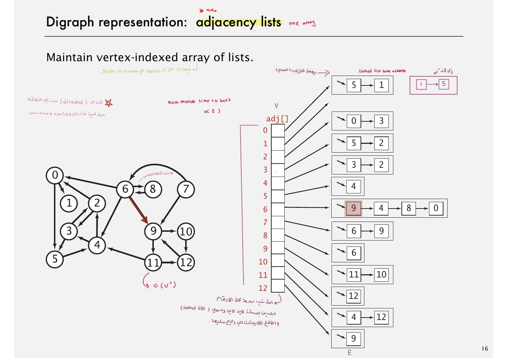
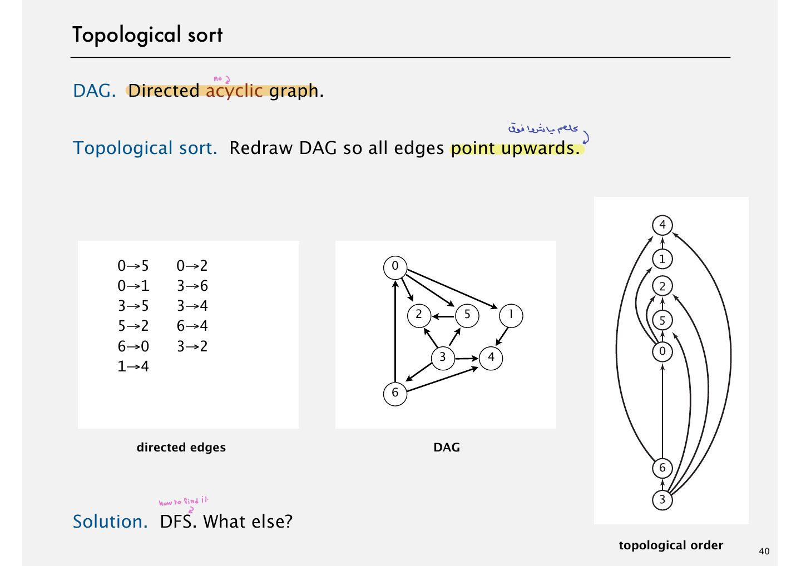
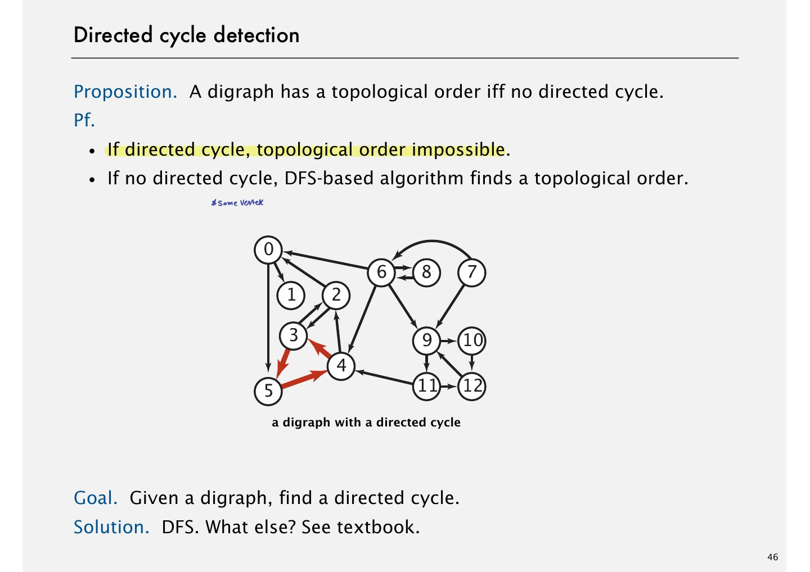

A topological order exists if and only if the digraph:
Directed Graphs
Digraph applications, the Digraph API and adjacency lists, reachability with DFS, BFS in digraphs (web crawler), topological sort, and directed cycle detection.
How to read this page
Every original slide is shown unchanged. Yellow marks on a slide point to a numbered note: hover or tap a mark to jump to its note, and hover a note to see its marks. Questions tagged Past exam appeared on a real paper; Prediction questions are likely angles, not confirmed. Pick an answer to each question: a wrong pick tells you why it is wrong, so you can try again.
All 69 slides
- 1 A l g o r i t h m s
- 2 Slide 2
- 3 Directed graphs
- 4 Road network
- 5 Political blogosphere graph
- 6 Overnight interbank loan graph
- 7 Uber taxi graph
- 8 Implication graph
- 9 Combinational circuit
- 10 WordNet graph
- 11 Digraph applications
- 12 Some digraph problems
- 13 Slide 13
- 14 Digraph API
- 15 Digraph API
- 16 Digraph representation: adjacency lists
- 17 Digraph representations
- 18 Adjacency-lists graph representation (review): Java implementation
- 19 Adjacency-lists digraph representation: Java implementation
- 20 Slide 20
- 21 Reachability
- 22 Depth-Þrst search in digraphs
- 23 Iiii
- 24 8
- 25 Depth-Þrst search demo
- 26 Depth-Þrst search (in undirected graphs)
- 27 Depth-Þrst search (in directed graphs)
- 28 Reachability application: program control-ßow analysis
- 29 Reachability application: mark-sweep garbage collector
- 30 Reachability application: mark-sweep garbage collector
- 31 Depth-Þrst search in digraphs summary
- 32 Breadth-Þrst search in digraphs
- 33 Directed breadth-Þrst search demo bfs 11.3.1919
- 34 Directed breadth-Þrst search demo
- 35 Multiple-source shortest paths
- 36 six
- 37 direted
- 38 Breadth-Þrst search in digraphs application: web crawler
- 39 Bare-bones web crawler: Java implementation
- 40 Web crawler output
- 41 Slide 41
- 42 Precedence scheduling
- 43 Topological sort
- 44 Topological sort demo
- 45 Topological sort demo
- 46 Depth-Þrst search order
- 47 Topological sort in a DAG: intuition
- 48 Topological sort in a DAG: correctness proof
- 49 Directed cycle detection
- 50 Directed cycle detection application: precedence scheduling
- 51 Directed cycle detection application: cyclic inheritance
- 52 Directed cycle detection application: spreadsheet recalculation
- 53 Depth-Þrst search orders
- 54 Slide 54
- 55 Strongly-connected components
- 56 Connected components vs. strongly-connected components
- 57 Strong component application: ecological food webs
- 58 Strong component application: software modules
- 59 X
- 60 Kosaraju-Sharir algorithm: intuition
- 61 Kosaraju-Sharir algorithm demo
- 62 Kosaraju-Sharir algorithm demo
- 63 Kosaraju-Sharir algorithm demo
- 64 Kosaraju-Sharir algorithm
- 65 Kosaraju-Sharir algorithm
- 66 Kosaraju-Sharir algorithm
- 67 Connected components in an undirected graph (with DFS)
- 68 Strong components in a digraph (with two DFSs)
- 69 Digraph-processing summary: algorithms of the day
Digraph representation: adjacency lists

Notes
-
Adjacency lists, but each edge appears once (in v’s list only).
Topological sort

Notes
-
Topological sort: order vertices so every edge points forward. Possible only for a DAG. Reverse DFS postorder gives it.
Exam angle
Directed cycle detection

Notes
-
Directed cycle detection with DFS (a back edge to a vertex on the stack).